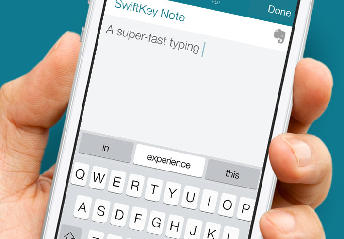

Background
As people around the world spend more and more time on their mobile devices, developing smart keyboards that could make typing easier becomes more and more desirable. For example, Swiftkey builds a smart keyboard which can present three options for what the next word might be based on what the user have typed.

The goal of this project is:
1. to understand the key to such smart keyboards, i.e., predictive text models
2. to build a Shiny app to implement the models